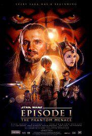
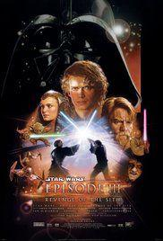
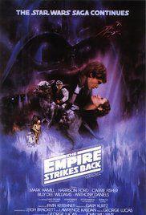
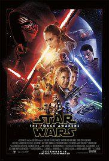

Title: Star Wars Episode I The Phantom Menace
Genre: Action, Adventure, Fantasy
Release Date: 29 July 1999
Desription:
Two Jedi Knights escape a hostile blockade to find allies and come across a young boy who may bring balance to the Force, but the long dormant Sith resurface to claim their old glory.

Title: Star Wars Episode III Revenge of the Sith
Genre: Action, Adventure, Fantasy
Release Date: 19 May 2005
Desription:
Three years into the Clone Wars, the Jedi rescue Palpatine from Count Dooku. As Obi-Wan pursues a new threat, Anakin acts as a double agent between the Jedi Council and Palpatine and is lured into a sinister plan to rule the galaxy.

Title: Star Wars Episode V The Empire Strikes Back
Genre: Action, Adventure, Fantasy
Release Date: 1990
Desription:
After the rebels are overpowered by the Empire on their newly established base, Luke Skywalker begins Jedi training with Yoda. His friends accept shelter from a questionable ally as Darth Vader hunts them in a plan to capture Luke.

Title: Star Wars Episode VII The Force Awakens
Genre: Action, Adventure, Fantasy
Release Date: 17 December 2015
Desription:
Three decades after the Empire's defeat, a new threat arises in the militant First Order. Stormtrooper defector Finn and spare parts scavenger Rey are caught up in the Resistance's search for the missing Luke Skywalker.